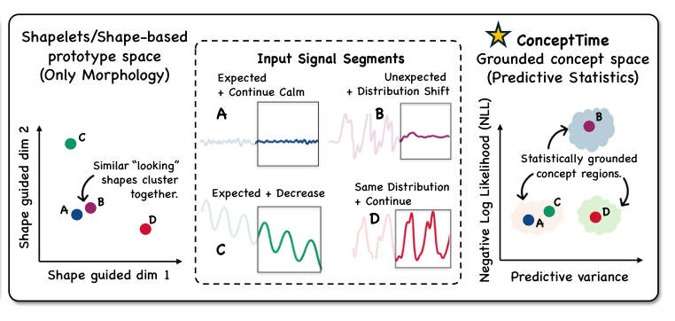
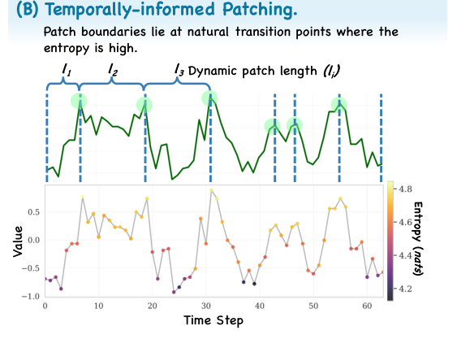
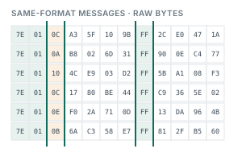

Sachith Abeywickrama
Ph.D. Student · Nanyang Technological University & A*STAR, Singapore
I am a Ph.D. student in Electrical and Electronic Engineering at Nanyang Technological University, carrying out my research at A*STAR with the Singapore International Graduate Award (SINGA). I am also an Agentic AI Researcher Intern at Huawei Singapore's Search and Recommendation Laboratory.
My research is on efficient, trustworthy, and adaptive AI for sequential data: time-series foundation models, interpretable-by-design models, and continual adaptation under real-world distribution shift. Before my Ph.D., I built production NLP and LLM systems at Rootcode, and studied Industrial Statistics and Mathematical Finance at the University of Colombo.
- Time-series foundation models
- Interpretable AI
- Continual learning
- Efficient sequence modeling
- Agentic AI
News
- Oct 2026Joined Huawei Singapore (Search and Recommendation Laboratory) as an Agentic AI Researcher Intern.
- 2026NeurIPSTwo papers accepted to the NeurIPS 2026 main conference in Sydney: ConceptTime and EntroPE.
- Jul 2026Second runner-up at the China-ASEAN Student Innovation & Entrepreneurship Challenge in Guiyang, representing NTU.
- Aug 2024Started my Ph.D. at NTU and A*STAR with the SINGA scholarship.
Publications
Hover over a thumbnail to see the method figure. Click a title for the project page.
Conference papers
-
NeurIPS 2026


Predictive Surprise as Self-Grounding Concept Bottleneck for Interpretable Time Series
NeurIPS 2026 · Main Conference, Sydney
One frozen forecaster's predictive surprise segments the series, grounds concepts without annotations, and gives a built-in fidelity score for abstention. 97.91% on Epilepsy with 1% of labels.
@inproceedings{abeywickrama2026concepttime, title = {Predictive Surprise as Self-Grounding Concept Bottleneck for Interpretable Time Series}, author = {Abeywickrama, Sachith and Eldele, Emadeldeen and Wu, Min and Li, Xiaoli and Yuen, Chau}, booktitle = {Advances in Neural Information Processing Systems (NeurIPS)}, year = {2026} } -
NeurIPS 2026


Entropy Guided Dynamic Patch Segmentation for Time Series Transformers
NeurIPS 2026 · Main Conference, Sydney
Patch boundaries go where a tiny frozen model's next-step entropy is high, so transformers see temporally coherent patches. 3.2% lower MSE than PatchTST with 90.9% fewer parameters.
@inproceedings{abeywickrama2026entrope, title = {Entropy Guided Dynamic Patch Segmentation for Time Series Transformers}, author = {Abeywickrama, Sachith and Eldele, Emadeldeen and Wu, Min and Li, Xiaoli and Yuen, Chau}, booktitle = {Advances in Neural Information Processing Systems (NeurIPS)}, year = {2026} }
Manuscripts
-

PACT: Identity-Preserving Domain-Incremental Adaptation of Frozen Time-Series Foundation Models
Manuscript under review, 2026
Local residual transports around a frozen foundation model adapt to new operating conditions without overwriting old ones. With a frozen Sundial backbone, PACT leads all five evaluated streams while keeping relative forgetting below 0.05.
-

NeurInferno: Field Inference for Unknown Binary Protocols Without Priors or Binaries
Manuscript, 2026
A trace-only neural model recovers byte-level field boundaries in protocols it has never seen: 0.807 average boundary F1 across 12 held-out protocols, lifting recall from 0.538 to 0.815.
Experience
-
Oct 2026 – Present
Agentic AI Researcher Intern
Huawei Singapore · Search and Recommendation Laboratory
Research on agentic AI for search and recommendation systems.
-
Aug 2024 – Present
Ph.D. Researcher / Research Scholar
Institute for Infocomm Research, A*STAR · Singapore
Efficient, trustworthy, and continual-learning methods for foundation models under distribution shift and limited labels, with multi-GPU training on SLURM for time-series foundation models and open-source LLMs.
-
May 2023 – Jun 2024
Associate Machine Learning Engineer
Rootcode · Sri Lanka
Document QA, semantic search, NER, and open-source LLM applications for enterprise clients, shipped with FastAPI, Docker, evaluation workflows, and cloud infrastructure.
-
Nov 2022 – Apr 2023
Artificial Intelligence Engineer Intern
Rootcode · Sri Lanka
Conversational AI and semantic-search systems for e-commerce discovery and support.
-
Jun 2022 – Sep 2022
Research Intern
Nanyang Technological University · Remote
Data-efficient polymer property prediction with topological molecular features and persistent spectral fingerprints.
Education
-
Aug 2024 – Present
Ph.D., Electrical and Electronic Engineering
Nanyang Technological University, Singapore
Research with A*STAR on efficient, interpretable, and continually adaptive AI for non-stationary sequential data.
-
Jan 2019 – Apr 2023
B.Sc. (Hons), Industrial Statistics and Mathematical Finance
University of Colombo, Sri Lanka
Honors and awards
-
Jul 2026
Second Runner-up, China-ASEAN Student Innovation & Entrepreneurship Challenge
Guiyang, China
For “Precision Drive Coming,” an autonomous humanoid robotics joint solution representing NTU. Selected among 32 finalists from 1,007 entries across 149 universities.

On stage in Guiyang -
2024
Singapore International Graduate Award (SINGA)
A*STAR
Competitive Ph.D. scholarship supporting doctoral study at NTU and research at A*STAR.
Technical skills
- Machine learning
- PyTorch, TensorFlow, scikit-learn, Transformers, foundation models, LLMs, self-supervised learning, continual learning, generative AI
- Trustworthy & efficient AI
- Interpretable AI, out-of-distribution detection, few-shot learning, model adaptation, efficient sequence modeling, uncertainty estimation
- Applications
- Time-series modeling, NLP, semantic search, information retrieval, document QA, named-entity recognition, anomaly detection
- Systems
- Python, SLURM, distributed multi-GPU training, Docker, Git, FastAPI, AWS, Google Cloud, Microsoft Azure